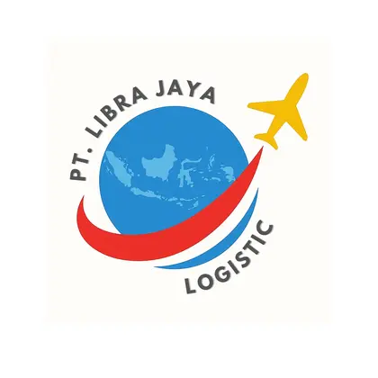

Kargo Udara
Pengiriman port-to-port dan door-to-door dengan pilihan layanan sesuai prioritas waktu.

PT LIBRA JAYALOGISTICSolusi pengiriman udara, darat, laut, pergudangan dan distribusi untuk kebutuhan bisnis maupun perorangan.
PT Libra Jaya Logistic menyediakan layanan logistik yang fleksibel, transparan, dan disesuaikan dengan karakter barang serta tujuan pengiriman.
Kami menghubungkan operasional Jakarta, Jayapura dan wilayah Papua dengan jaringan distribusi nasional.
Pengiriman port-to-port dan door-to-door dengan pilihan layanan sesuai prioritas waktu.
Penjemputan, pengiriman antarkota, dan distribusi last-mile melalui jaringan armada.
Solusi pengiriman ekonomis untuk barang besar, berat, dan kebutuhan proyek.
Penerimaan, penyimpanan, konsolidasi, pengemasan ulang, dan penyiapan pengiriman.
Pendampingan dokumen pengiriman, karantina, dangerous goods, dan kebutuhan khusus.
ONS, Reguler, serta pengiriman HP, laptop, tablet dan gadget dari Jakarta ke seluruh Indonesia.
Sampaikan asal, tujuan, berat, ukuran, jumlah koli, dan jenis barang.
Barang dijemput, diverifikasi, ditimbang dan ditangani sesuai standar pengiriman.
Barang dikirim melalui layanan yang dipilih dan diserahterimakan di tujuan.
Gunakan kalkulator JL Express untuk ONS, Reguler dan Port to Port Bandara Soetta.
Tim kami siap membantu memilih layanan yang sesuai dengan rute, karakter barang, dan target waktu.